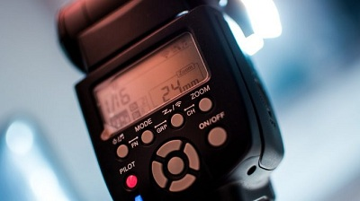
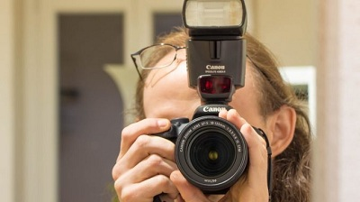
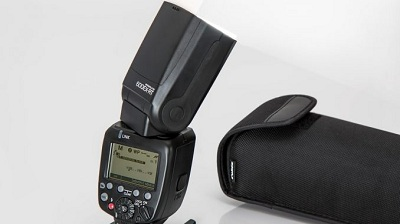
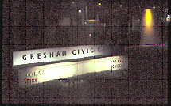
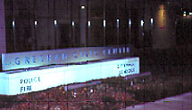
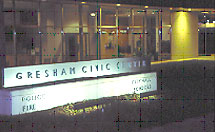

Flash photography is one of the most misunderstood areas of the art. To many people, the flash is a mystical device that, while easy to use (it attaches it to your camera’s hot shoe), is difficult to use correctly in many situations.
One of the common questions is “Why did the background turn black?”

If you’re like most photographers, many of your flash photos come out fine. However, you create a significant percentage of flash photos in which the background appears dark or completely black.
This article will not deal with properly illuminating the subject using either full or partial (fill) flash. Instead, it will provide information to assist you in properly illuminating an interesting background while using your flash on the main subject.
Although one technique we’ll cover requires that you use your camera in manual mode, the information presented here is designed for photographers with auto focus cameras.
There are two primary causes for a dark background in flash photography: flash-background distance and the exposure mode. Discussing flash-background distance requires a brief summary of the basics of flash photography.
In normal (ambient) light photography, the two most important controls determining exposure are f-stops and shutter duration. (We’ll use the term “shutter duration” because it’s more accurate than “shutter speed.”) Technically, the shutter curtains open and close at the same speed no matter what the length of the exposure is. In flash photography, shutter duration is not relevant.
However, shutter duration is important in one aspect. For every camera, there is a shutter duration that’s designated as the maximum “flash synchronization speed.” You can achieve properly exposed flash images by shooting at the maximum flash synchronization speed or any slower duration.
If you shoot at a speed faster than the maximum flash synchronization speed, the shutter will close before the exposure is complete. This will result in a black band along the top of your image.
On manual cameras, the maximum flash synchronization speed is a different color on the shutter speed dial from the other numbers. The maximum synchronization speed for auto focus cameras is not a significant issue. Auto focus cameras will not let you shoot faster than the maximum flash synchronization speed.
There are many auto focus camera/flash combinations that allow you to shoot at any shutter duration available on your camera. This feature is most often called High Speed Synchronization.
f-stop and flash-subject distance
In flash photography, the two most important controls over exposure are f-stop and flash-subject distance.
These controls combine to create the flash unit’s Guide Number. The guide number = f-stop x flash-subject distance. For instance, GN = 10′ x f/4 = 40. The guide number is a relative indicator of the power of the flash. A flash having a guide number of 150 is more powerful than a flash with a guide number of 100.
However, be careful when comparing guide numbers. Some are listed in feet; others are listed in meters. For proper comparison results, be sure each flash is listed in the same measurement and uses the same focal length lens and ISO. (Most guide numbers are computed at ISO 100 with a 100mm lens.)
The guide number can be used to ESTIMATE either the f-stop to use or the distance the flash will cover. Consider a pop-up flash, which normally has a guide number in the low forties, as an example. For ease of calculation, let’s use forty (in feet) as the guide number.
To determine how far the flash will extend, divide the guide number by the f-stop. If we use f/4 with a flash having a guide number of forty, our flash will extend only ten feet. It’s only five feet if we use f/8 to get more depth of field. Background objects in the extra depth of field we desire will be underexposed due to the short distance the flash covers.
Obviously, your pop-up flash is not very powerful, so don’t use it when you’re seated in the third deck of a baseball stadium trying to take a photo of the batter.
Dividing the guide number by the flash-subject distance will give us the f-stop to use. If we know the subject is ten feet away, then forty divided by ten equals f/4. If you want to know if the flash can extend a certain distance past the subject, replace the flash-subject distance with the total distance in the formula.

Guide numbers were developed experimentally indoors in a highly reflective room.
Unless you’re shooting under those conditions, consider the guide numbers to be estimates. This is especially true when you’re using the guide number to calculate either the f-stop or flash distance. In the example above, we calculated that the flash would extend ten feet when we were shooting at f/4 with a guide number of forty.
In typical field shooting, the flash would probably not go that far. Use a slightly shorter distance, such as eight feet, to ensure a good exposure.
ISO, the other control over ambient light exposure, does have an impact on the guide number.
The guide number increases as the ISO increases, because it is more receptive to light. If the guide number were computed with ISO 100, a lower ISO would have a lower guide number; an ISO greater than 100 would have a larger guide number.
Most flash systems are coordinated so that the point of focus is also the point of exposure for the flash system. This is logical.
The point of focus is the main subject in most photos, and you want the main subject properly exposed by the flash. There’s only one exception to the guideline “your subject will always be properly exposed if it’s within the range of the flash.”
Each flash unit has a minimum distance that the subject has to be away from the flash in order to enjoy proper exposure. Macro flash units have a very small minimum distance. Normal flash units may have a three-foot minimum distance. Check your flash manual for the minimum distance, or your subject might be greatly overexposed.
In all other situations, the flash should properly illuminate your subject, if it’s within the distance the flash will extend. However, light falls off rapidly at the square of the distance. If your background is any significant distance from your subject, the wrong exposure mode may result in the background not receiving enough illumination from the flash.
If it won’t illuminate the background, you may need to open up the aperture and try again.

The second cause for dark background is the exposure mode. Which auto exposure mode works best with flash photography? It depends. Let’s examine the differences between shooting in Program Mode (P) versus Aperture Priority Mode (A or Av).
Note that some cameras have two different program modes. One is usually a fully automatic mode; the other one is an automatic mode that allows the photographer to make changes to the settings. Many Canon cameras, for example, use the “Green Square” as the fully automatic mode. The “P” setting is also automatic, but it allows the photographer to make changes.
In most cameras, all of the program modes become fully automatic and don’t allow the photographer to make changes in the way they could in normal ambient light photography. The camera will provide an f-stop and shutter duration that you have to use—no exceptions.
Due to the bias toward shutter duration in all program modes, the camera will set a flash synchronization speed anywhere from 1/60th to the maximum flash synchronization speed. Remember, you can’t change the shutter duration to a slower one.
Exactly which duration is selected will depend upon the level of ambient light.
In situations where the ambient light level isn’t too dark, Program Mode does an excellent job of controlling flash exposure. However, when the light level drops (you can tell because the shutter duration will be at 1/60th), the minimum shutter duration of 1/60th may not be long enough to capture the background ambient light. The result is that your subject will be properly exposed, while your background will be dark or even black.
Aperture Priority Mode automatically goes into a “slow-synchronization” mode when used in flash photography. This mode automatically allows the camera to select shutter duration (as long as it is 30”, if necessary) slow enough to fully capture the ambient background light, while the flash properly illuminates the subject.
In low light situations, where you want to capture the background ambient light, Aperture Priority Mode is the best choice. Be aware that it can easily give you a shutter duration of 1”, 4”, or longer. A tripod, or some other way of stabilizing your camera for a long duration, is absolutely necessary.
Look at the three images below to see the difference between Program and Aperture Priority exposure modes. Each image was taken from the same location with the focus on the illuminated wall in each photo.



The first image was taken without a flash in aperture priority mode. You can tell that a flash wasn’t used, because the color of the sign is influenced by the color temperature of the fluorescent lights that illuminate it. As you can see, the interior of the building in the background is hardly illuminated–even though the camera provided long shutter duration at this low light level.
A flash was used in the second photo. Note the difference in color between photos 1 and 2. The flash approximates the color temperature of daylight, so the wall looks similar to the way in which our eyes would see it. The illumination from the flash extended beyond the wall. The reflections of several metal window supports are visible due to a little more available background illumination.
The third photo uses Aperture Priority mode and slow-synchronization. Notice the illumination of the wall. It received both flash and more ambient light illumination. Therefore, the wall in the image looks exactly as it does to the eye. The longer shutter speed (4” versus 1/60th) enabled the building’s interior to be properly illuminated.
You can use Aperture Priority mode with flash for many situations. The mode works well when you’re taking a photo of a person with a lighted building or other interesting illuminated objects in the background.
Landscape photographers can also use Aperture Priority mode with flash. For example, allow the flash to illuminate an interesting foreground object while a longer exposure captures the colors of the sunset.
Sometimes you may want to intentionally lighten or darken the background. Perhaps the background is cluttered or there’s an element that you can’t get completely out of focus. In these situations, darkening the background allows you to place more emphasis on your subject.
The easiest way for auto focus cameras to do that is in Manual mode.
In manual mode, the flash will properly illuminate the subject. Any exposure compensation that you perform will only affect the background.If, for example, you use -1 stop of exposure compensation, the background will be one stop darker, and your subject will remain properly exposed.
To reduce exposure by one stop in Manual mode, establish the correct exposure and either use a faster shutter duration or close down the aperture by one stop. For example, if the correct exposure was 1/60th at f/5.6, change the settings to either 1/125th at f/5.6 or 1/60th at f/8.
Since the flash will automatically properly illuminate the subject (if it’s within the range of the flash), you can adjust the background illumination by as many stops as you desire.
When using a flash in one of the auto focus modes, the flash performs differently. For most cameras in an auto focus mode (aperture priority, for example), any exposure compensation affects the subject as well as the background.
There is a work-around for this problem if your camera operates in this manner. Suppose you want to deduct two stops of light from the background but have the subject properly exposed. Start by using your exposure compensation to reduce the exposure by two stops. This is easily accomplished if you have an exposure compensation feature on your camera. At this point, both the subject and background have two stops less exposure.
To compensate for the loss of two stops of light in the image, set either your flash unit or camera’s FLASH exposure compensation to +2 stops. Increasing the flash exposure by the same amount that you decreased the overall exposure will properly illuminate your subject while making the background darker.
For example, decreasing the ambient light by two stops (through the exposure compensation feature) results in the subject being illuminated at -2 and the background at -2. Increasing the flash exposure by +2 results in the subject being illuminated at 0 (-2 and +2 cancel out to give the normal exposure) and the background remains at -2.
In summary, the distance from the camera to the background and the exposure mode you use are the determining factors for background exposure. If you use an automatic exposure mode, obtaining a shutter duration of 1/60th should make you aware that the background may be dark.
If the background is important, switch to Aperture Priority mode, stabilize your camera for a long exposure, and take the shot. There are legitimate reasons for darkening the background, but it should be an intentional decision, not one achieved by accident.